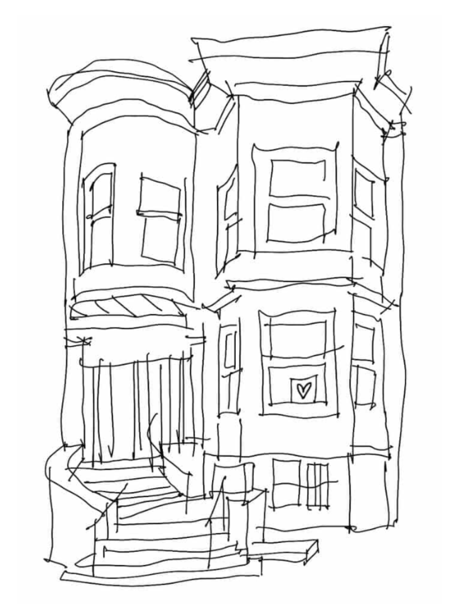

why we do this
10 reasons I love living in community

tattoo design of The Village by lila.tattoo (now on my arm!)
I currently live with 16 adults and an 8yo. If you regularly read my blog, or if you just got here, you might think that community living seems like a lot of stressful logistical and emotional work -- and you’d be right! So why have I stayed at The Village for four years and counting? This community is one of the most important and beautiful parts of my life. And here are just 10 of the reasons why:
- The feeling of progress towards a meaningful goal. Working on multi-person projects can be very rewarding, and often people only experience this at their job. We each have our own roles and ways we contribute, and we accomplish goals and celebrate those wins together. But instead of goals like “increase shareholder value”, “maximize profits”, or “achieve long-term market dominance”, our goals are to run a 17-person household smoothly and enjoy the experience of living together, which is much more appealing to me. I get to help a complicated vision come to life, without the levels of urgency and capitalism that are usually present in a day job.
- There’s always someone around. When I get home from a fun event and want to tell someone about it, when I’m sad and want to get a hug or someone to talk to, when I feel like taking a break from work and chit-chatting, there’s almost always someone around to hang out with. I used to go to my phone in these moments, and it’s been nice being on my phone way less when I have many friends around.
- Eating regularly is easier. I’ve historically had trouble feeding myself, and living in community has dramatically improved my diet. We get huge deliveries from Costco weekly and share most of our food. The fridge is frequently full of a wide variety of produce from the farmer’s market, and our pantry is full of beans and grains. Someone cooks dinner almost every night, with extra to share.
- The Goodwill closet. Many Villagers and Village guests have gotten new favorite pieces from here. It’s a delight to regularly witness this interaction: “omg I put that shirt in the goodwill closet!” “oh wow, I’m loving it! thank you” “it looks so great on you! I’m so glad you got it”
-
Connecting with people different from me. I've lived with several people I probably wouldn't have otherwise gotten to know well: people much older or younger than me, startup founders and AI researchers, people who had not used “they” pronouns for a friend until meeting me. Living with them, seeing them every day, and building friendships with them has challenged my biases and given me a deeper understanding of the nuances of human experience.
- Living with kids. One of the most special examples of connecting with housemates different from me has been the close relationships I’ve built with kids over the years. Young children have innocent curiosity unlike any adult. They express opinions honestly and emotions rawly, make weird art without shame holding them back, and love to play. They make me laugh when I’m feeling sad. They never have opinions about the dishes in the sink.
- Communication skills and emotional growth. I’ve become a better collaborator over my time living in community. I’ve learned skills for decision-making, consensus-building, conflict navigation, and tolerating others’ discomfort. I’ve discovered the value of flexibility and learned when I can be flexible and when I can’t. I’ve learned more about my boundaries and where my relational trauma comes up. I’ve harvested juicy content for therapy sessions and grown so much in ways I’m very excited about. I believe these skills are essential for building the more collaborative future society I want to live in, and I’m grateful for the opportunity to practice and grow among friends.
- Huge common spaces. We have three living rooms, three kitchens, a workout room, a tea room, and a private spacious backyard. It’s not very common to have this much space in a city home to hang out, cook, eat, and host events -- but communities with many bedrooms often have bigger common spaces.
- We work out together. For at least two years, Villagers have worked out together several times a week. We do home yoga, MadFit videos, bike rides through Golden Gate Park, and group runs around the Panhandle. We have a room full of dumbbells, resistance bands, and other workout supplies. Several of us hate working out alone, so having friends to join us has been very helpful.
- Everyone contributes in their own ways, and we all get to benefit from everyone’s contributions. I live with adorable pets and dozens of plants, despite not doing much at all to take care of them. I’ve had countless home haircuts. Someone improved several people’s wardrobes with personal clothes shopping. I’ve had help hemming jeans. I’ve led mediation and facilitation for difficult conversations. Our skills and interests support each other and build a fuller home.
Though many of these examples are about The Village, I’ve heard similar stories from people at other houses. I can’t overstate how much living in community has enriched people’s lives. This kind of living setup isn’t for everyone, but I think many people don’t realize how much they could enjoy it. When I write on this blog about the emotional and logistical challenges of community, it’s out of hope that people can be better equipped to work through these challenges. The easier we can make it to live together in community, the more people get to reap the incredible benefits of living communally.